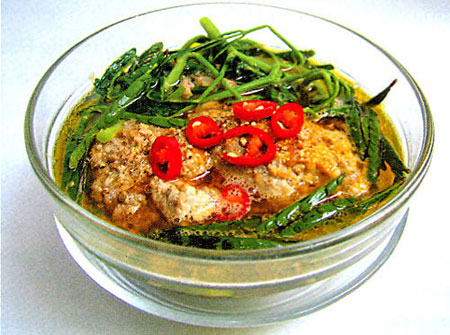

Canh cua rau nhút

- Khẩu phần4
- Chuẩn bị 15 phút
- Thực hiện 25 phút
Nguyên liệu
- 300g cua đồng (nguyên con)
- 1 bó rau nhút
- 1 nhánh ngò gai
- 1 khúc ớt sừng
- 1 thìa cà phê hành tím băm
- 2 thìa cà phê hạt nêm từ Thịt Thăn, Xương
Ống và Tủy - Bổ sung Vitamin A
- 1 thìa súp nước mắm chấm
- 1 thìa súp dầu ăn
Hướng dẫn thực hiện
- Cua đồng ngâm nước cho rã bùn, xóc rửa sạch, lột mai cua để lấy gạch,
thân cua bỏ yếm, rửa lại, để ráo rồi xay nhuyễn
- Rau nhút nhặt khúc vừa ăn, rửa sạch. Ngò gai cắt nhuyễn. Ớt sừng xắt sợi
- Hòa thịt cua đã xay với 1 lít nước, dùng tay bóp đều, gạn lấy nước, bỏ
xác, cho vào nước cua 1 thìa cà phê Hạt nêm từ Thịt Thăn, Xương Ống và
Tủy - Bổ sung Vitamin A, 1 thìa súp nước mắm chấm , bắc nồi lên bếp, đun nhỏ
lửa, dùng đũa khuấy đều đến khi thịt cua nổi lên mặt
- Vớt thịt cua để riêng, cho rau nhút vào nấu vừa chín
- Phi hành băm với dầu cho thơm, xào gạch cua, nêm với 1/2 thìa cà phê hạt
nêm
- 1/2 thìa cà phê nước mắm chấm cho vừa ăn, cho vào nồi nước thịt
cua, khuấy đều
- Múc canh vào bát, rắc ngò gai, ớt xắt vào, dùng nóng.